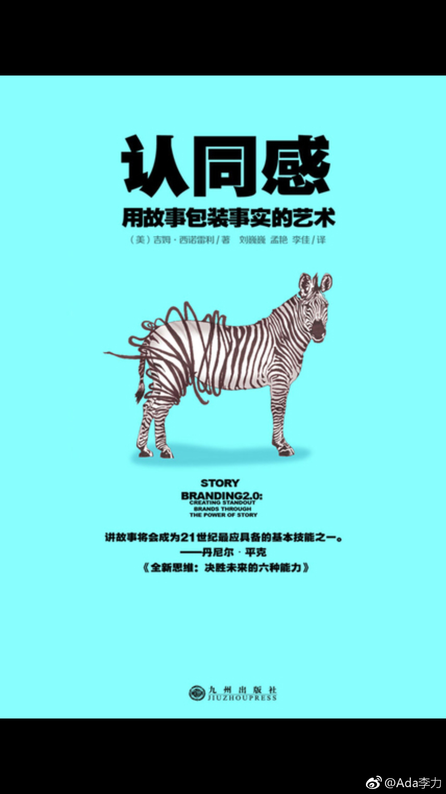

#读书# 不了解广告业，不知道广告业以前是怎么运作的。我以为作者书中所说的，把信念和价值观注入品牌之中是一个常识。
这种常识可以从其它场景中得到验证，比如说我们愿意跟一个人交往，有时候并不仅仅是因为他有钱，或者是他风趣，深层的基础，是我们会认为他是一个好人。做个好人是价值观层面的体现，而有钱很多时候只能归结于能力。能力并不是我们去跟别人发展友谊的根本原因。
创业中有类似的现象，有些创业公司要靠梦想去吸引同伴和激励。创业公司的承诺要多年后才能验证，在验证之前，员工为什么会相信创始人画的这个饼。相信就是一种生产力。而这种相信是要基于理念一致的基础上。"一起让世界变得更好"，和"让公司成为行业第一"，不同的理念吸引来的人也是不一样的。有些公司的口号跟广告一样，听到的人往往会有这样疑问，这跟我有什么关系？！
品牌塑造也是类似的原理。广告里太多自卖自夸的现象，作者的观点是，你产品的好处要让消费者自己得出这个结论。只有人相信的才是事实，看到的听说的都不是事实。
用故事来阐述事情，是最近挺热的一个趋势，但这本书里并没有过多涉及到，如何去讲好一个故事。
这种常识可以从其它场景中得到验证，比如说我们愿意跟一个人交往，有时候并不仅仅是因为他有钱，或者是他风趣，深层的基础，是我们会认为他是一个好人。做个好人是价值观层面的体现，而有钱很多时候只能归结于能力。能力并不是我们去跟别人发展友谊的根本原因。
创业中有类似的现象，有些创业公司要靠梦想去吸引同伴和激励。创业公司的承诺要多年后才能验证，在验证之前，员工为什么会相信创始人画的这个饼。相信就是一种生产力。而这种相信是要基于理念一致的基础上。"一起让世界变得更好"，和"让公司成为行业第一"，不同的理念吸引来的人也是不一样的。有些公司的口号跟广告一样，听到的人往往会有这样疑问，这跟我有什么关系？！
品牌塑造也是类似的原理。广告里太多自卖自夸的现象，作者的观点是，你产品的好处要让消费者自己得出这个结论。只有人相信的才是事实，看到的听说的都不是事实。
用故事来阐述事情，是最近挺热的一个趋势，但这本书里并没有过多涉及到，如何去讲好一个故事。
- 